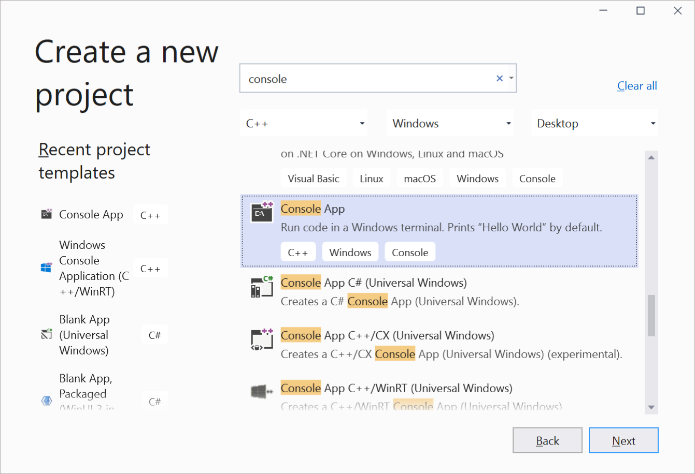
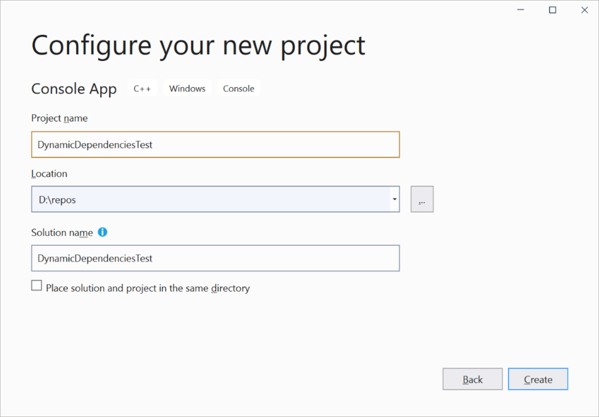

Tutorial: Build and deploy an unpackaged app using Preview and Experimental channels of the Windows App SDK
Using the Windows App SDK Stable version: You can auto-initialize the Windows App SDK through the WindowsPackageType project property when you Create your first WinUI 3 project. You can also follow a tutorial (Tutorial: Use the bootstrapper API in an app packaged with external location or unpackaged that uses the Windows App SDK) in which you configure a packaged with external location or unpackaged app to load the Windows App SDK runtime, and call Windows App SDK APIs.
This article provides a step-by-step tutorial for configuring a packaged with external location or unpackaged app so that it can load the Windows App SDK runtime and call Windows App SDK APIs. This tutorial demonstrates this scenario using a basic Console app project, but the steps apply to any unpackaged desktop app that uses the Windows App SDK.
Before completing this tutorial, we recommend that you review Runtime architecture to learn more about the Framework package dependency your app takes when it uses Reunion, and the additional components required to work in an unpackaged app.
Note
The dynamic dependencies and bootstrapper APIs fail when called by an elevated process. As a result, Visual Studio should not be launched elevated. See issue for more details.
Prerequisites
- Install tools for the Windows App SDK.
- Ensure that all dependencies for the app are installed (see Windows App SDK deployment guide for framework-dependent apps packaged with external location or unpackaged). The simplest solution is to run the Windows App SDK runtime installer.
Instructions
You can choose to follow this tutorial using a C++ project or a C# project.
Follow these instructions to configure a C++ project. Starting in 1.0 Preview 3, you can also configure a C++ project that includes WinUI 3 unpackaged support.
In Visual Studio, create a new C++ Console App project. Name the project DynamicDependenciesTest.


After you create the project, you should have a 'Hello World' C++ console app.
Next, install the Windows App SDK NuGet package in your project.
- In Solution Explorer, right-click the References node and choose Manage Nuget Packages.
- In the NuGet Package Manager window, select the Include prerelease check box near the top of the window, select the Browse tab, and install one of the following packages:
- To install 1.0 Preview 3 or 1.0 Experimental, search for Microsoft.WindowsAppSDK.
- To install 0.8 Preview, search for Microsoft.ProjectReunion.
For unpackaged apps, you will need to call the Bootstrapper API to Use the Windows App SDK runtime for apps packaged with external location or unpackaged. This enables you to use Windows App SDK APIs at runtime.
Add the following include files to the top of your DynamicDependenciesTest.cpp file. The mddbootstrap.h header is available via the Windows App SDK NuGet package.
#include <windows.h>
#include <MddBootstrap.h>
Next, add this code at the beginning of your main method to call the MddBootstrapInitialize function to initialize the Bootstrapper and handle any errors. This code defines what version of the Windows App SDK the app is dependent upon when initializing the Bootstrapper.
// The following code is for 1.0 Preview 3. If using 1.0 Experimental,
// replace with versionTag{ L"experimental1" }. If using version 0.8 Preview,
// replace with majorMinorVersion{ 0x00000008 } and versionTag{ L"preview" }.
const UINT32 majorMinorVersion{ 0x00010000 };
PCWSTR versionTag{ L"preview3" };
const PACKAGE_VERSION minVersion{};
const HRESULT hr{ MddBootstrapInitialize(majorMinorVersion, versionTag, minVersion) };
// Check the return code for errors. If there is an error, display the result.
if (FAILED(hr))
{
wprintf(L"Error 0x%X in MddBootstrapInitialize(0x%08X, %s, %hu.%hu.%hu.%hu)\n",
hr, majorMinorVersion, versionTag, minVersion.Major, minVersion.Minor, minVersion.Build, minVersion.Revision);
return hr;
}
Finally, add this code to display the string Hello World! and call the MddBootstrapShutdown function to uninitialize the Bootstrapper.
std::cout << "Hello World!\n";
// Release the DDLM and clean up.
MddBootstrapShutdown();
Your final code should look like this.
#include <iostream>
#include <windows.h>
#include <MddBootstrap.h>
int main()
{
// Take a dependency on Windows App SDK 1.0 Preview 3. If using 1.0 Experimental,
// replace with versionTag{ L"experimental1" }. If using version 0.8 Preview,
// replace with majorMinorVersion{ 0x00000008 } and versionTag{ L"preview" }.
const UINT32 majorMinorVersion{ 0x00010000 };
PCWSTR versionTag{ L"preview3" };
const PACKAGE_VERSION minVersion{};
const HRESULT hr{ MddBootstrapInitialize(majorMinorVersion, versionTag, minVersion) };
// Check the return code. If there is a failure, display the result.
if (FAILED(hr))
{
wprintf(L"Error 0x%X in MddBootstrapInitialize(0x%08X, %s, %hu.%hu.%hu.%hu)\n",
hr, majorMinorVersion, versionTag, minVersion.Major, minVersion.Minor, minVersion.Build, minVersion.Revision);
return hr;
}
std::cout << "Hello World!\n";
// Release the DDLM and clean up.
MddBootstrapShutdown();
}
Press F5 to build and run your app.
Follow these instructions to configure a C# project. Starting in 1.0 Preview 3, you can also configure a C# project that includes WinUI 3 unpackaged support.
In Visual Studio, create a new C# Console Application project. Name the project DynamicDependenciesTest.
Next, configure your project.
In Solution Explorer, right-click your project and choose Edit Project File.
Replace the value of the TargetFramework element with a Target Framework Moniker. For example, use the following if your app targets Windows 10, version 2004.
<TargetFramework>net8.0-windows10.0.19041.0</TargetFramework>
Save and close the project file.
Change the platform for your solution to x64. The default value in a .NET project is AnyCPU, but WinUI 3 doesn't support that platform.
- Select Build > Configuration Manager.
- Select the drop-down under Active solution platform and click New to open the New Solution Platform dialog box.
- In the drop-down under Type or select the new platform, select x64.
- Click OK to close the New Solution Platform dialog box.
- In Configuration Manager, click Close.
Install the Windows App SDK NuGet package in your project.
- In Solution Explorer, right-click the Dependencies node and choose Manage Nuget Packages.
- In the NuGet Package Manager window, select the Include prerelease check box near the top of the window, select the Browse tab, and install the Microsoft.WindowsAppSDK package.
For unpackaged apps, you will need to call the Bootstrapper API to Use the Windows App SDK runtime for apps packaged with external location or unpackaged. This enables you to use Windows App SDK APIs at runtime.
Open the Program.cs code file and replace the default code with the following code.
using System;
using Microsoft.Windows.ApplicationModel.DynamicDependency;
namespace DynamicDependenciesTest
{
class Program
{
static void Main(string[] args)
{
Bootstrap.Initialize(0x00010000, "preview3");
Console.WriteLine("Hello World!");
// Release the DDLM and clean up.
Bootstrap.Shutdown();
}
}
}
The bootstrapper API is a native C/C++ API that enables you to use the Windows App SDK APIs in your app. In .NET apps that use the Windows App SDK 1.0 Preview 3 or a later release, you can use the .NET wrapper for the bootstrapper API. This wrapper provides an easier way of calling the bootstrapper API in a .NET app than calling the native C/C++ functions directly. The previous code example calls the static Initialize and Shutdown methods of the Bootstrap class in the .NET wrapper for the bootstrapper API.
To demonstrate that the Windows App SDK runtime components were loaded properly, add some code that uses the ResourceManager class in the Windows App SDK to load a string resource.
Add a new Resources File (.resw) to your project.
With the resources file open in the editor, create a new string resource with the following properties.
- Name: Message
- Value: Hello World!
Save the resources file.
Open the Program.cs code file and add the following statement to the top of the file:
using Microsoft.Windows.ApplicationModel.Resources;
Replace the Console.WriteLine("Hello World!"); line with the following code.
// Create a resource manager using the resource index generated during build.
var manager = new Microsoft.ApplicationModel.Resources.ResourceManager("DynamicDependenciesTest.pri");
// Lookup a string in the RESW file using its name.
Console.WriteLine(manager.MainResourceMap.GetValue("Resources/Message").ValueAsString);
Press F5 to build and run your app. You should see the string Hello World! successfully displayed.
Follow these instructions to configure a C# project that uses the 1.0 Experimental or earlier release of the Windows App SDK.
In Visual Studio, create a new C# Console Application project. Name the project DynamicDependenciesTest.
Next, configure your project.
In Solution Explorer, right-click your project and choose Edit Project File.
Replace the value of the TargetFramework element with a Target Framework Moniker. For example, use the following if your app targets Windows 10, version 2004.
<TargetFramework>net8.0-windows10.0.19041.0</TargetFramework>
Save and close the project file.
Change the platform for your solution to x64. The default value in a .NET project is AnyCPU, but WinUI 3 doesn't support that platform.
- Select Build > Configuration Manager.
- Select the drop-down under Active solution platform and click New to open the New Solution Platform dialog box.
- In the drop-down under Type or select the new platform, select x64.
- Click OK to close the New Solution Platform dialog box.
- In Configuration Manager, click Close.
Install the Windows App SDK NuGet package in your project.
- In Solution Explorer, right-click the Dependencies node and choose Manage Nuget Packages.
- In the NuGet Package Manager window, select the Include prerelease check box near the top of the window, select the Browse tab, and install one of the following packages:
- To install 1.0 Experimental, search for Microsoft.WindowsAppSDK.
- To install 0.8 Preview, search for Microsoft.ProjectReunion.
You are now ready to use the bootstrapper API (see Use the Windows App SDK runtime for apps packaged with external location or unpackaged) to dynamically take a dependency on the Windows App SDK framework package. This enables you to use the Windows App SDK APIs in your app.
Add a new code file named MddBootstrap.cs to your project and add the following code to it. The MddBootstrapInitialize and MddBootstrapShutdown functions shown in this code example are available via the Windows App SDK NuGet package.
using System.Runtime.InteropServices;
namespace Microsoft.Windows.ApplicationModel
{
public struct PackageVersion
{
ushort Major;
ushort Minor;
ushort Build;
ushort Revision;
public PackageVersion(ushort major) :
this(major, 0, 0, 0)
{
}
public PackageVersion(ushort major, ushort minor) :
this(major, minor, 0, 0)
{
}
public PackageVersion(ushort major, ushort minor, ushort build) :
this(major, minor, build, 0)
{
}
public PackageVersion(ushort major, ushort minor, ushort build, ushort revision)
{
Major = major;
Minor = minor;
Build = build;
Revision = revision;
}
public PackageVersion(ulong version) :
this((ushort)(version >> 48), (ushort)(version >> 32), (ushort)(version >> 16), (ushort)version)
{
}
public ulong ToVersion()
{
return (((ulong)Major) << 48) | (((ulong)Minor) << 32) | (((ulong)Build) << 16) | ((ulong)Revision);
}
};
public class MddBootstrap
{
public static int Initialize(uint majorMinorVersion)
{
return Initialize(majorMinorVersion, null);
}
public static int Initialize(uint majorMinorVersion, string versionTag)
{
var minVersion = new PackageVersion();
return Initialize(majorMinorVersion, versionTag, minVersion);
}
public static int Initialize(uint majorMinorVersion, string versionTag, PackageVersion minVersion)
{
return MddBootstrapInitialize(majorMinorVersion, versionTag, minVersion);
}
// Import the bootstrapper library for Windows App SDK 1.0 Experimental.
// If using version 0.8 Preview, replace with Microsoft.ProjectReunion.Bootstrap.dll.
[DllImport("Microsoft.WindowsAppSDK.Bootstrap.dll", CharSet = CharSet.Unicode)]
private static extern int MddBootstrapInitialize(uint majorMinorVersion, string versionTag, PackageVersion packageVersion);
public static void Shutdown()
{
MddBootstrapShutdown();
}
// Import the bootstrapper library for Windows App SDK 1.0 Experimental.
// If using version 0.8 Preview, replace with Microsoft.ProjectReunion.Bootstrap.dll.
[DllImport("Microsoft.WindowsAppSDK.Bootstrap.dll")]
private static extern void MddBootstrapShutdown();
}
}
In the Program.cs code file, replace the default code with the following code.
using System;
using Microsoft.Windows.ApplicationModel;
namespace DynamicDependenciesTest
{
class Program
{
static void Main(string[] args)
{
// Take a dependency on Windows App SDK 1.0 Experimental.
// If using version 0.8 Preview, replace with MddBootstrap.Initialize(8, "preview").
MddBootstrap.Initialize(0x00010000, "experimental1");
Console.WriteLine("Hello World!");
// Release the DDLM and clean up.
MddBootstrap.Shutdown();
}
}
}
To demonstrate that the Windows App SDK runtime components were loaded properly, add some code that uses the ResourceManager class in the Windows App SDK to load a string resource.
Add a new Resources File (.resw) to your project.
With the resources file open in the editor, create a new string resource with the following properties.
- Name: Message
- Value: Hello World!
Save the resources file.
Open the Program.cs code file and add the following statement to the top of the file:
using Microsoft.Windows.ApplicationModel.Resources;
Replace the Console.WriteLine("Hello World!"); line with the following code.
// Create a resource manager using the resource index generated during build.
var manager = new ResourceManager("DynamicDependenciesTest.pri");
// Lookup a string in the RESW file using its name.
Console.WriteLine(manager.MainResourceMap.GetValue("Resources/Message").ValueAsString);
Press F5 to build and run your app. You should see the string Hello World! successfully displayed.